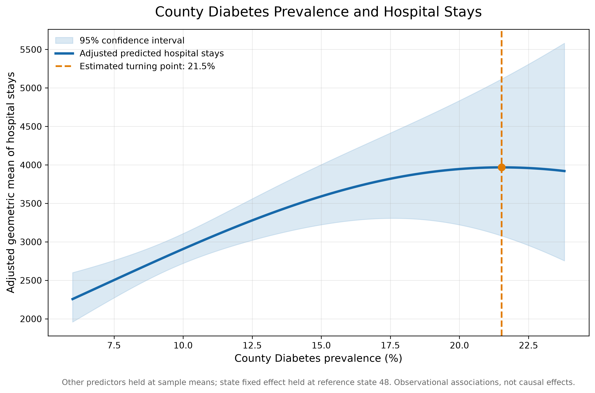
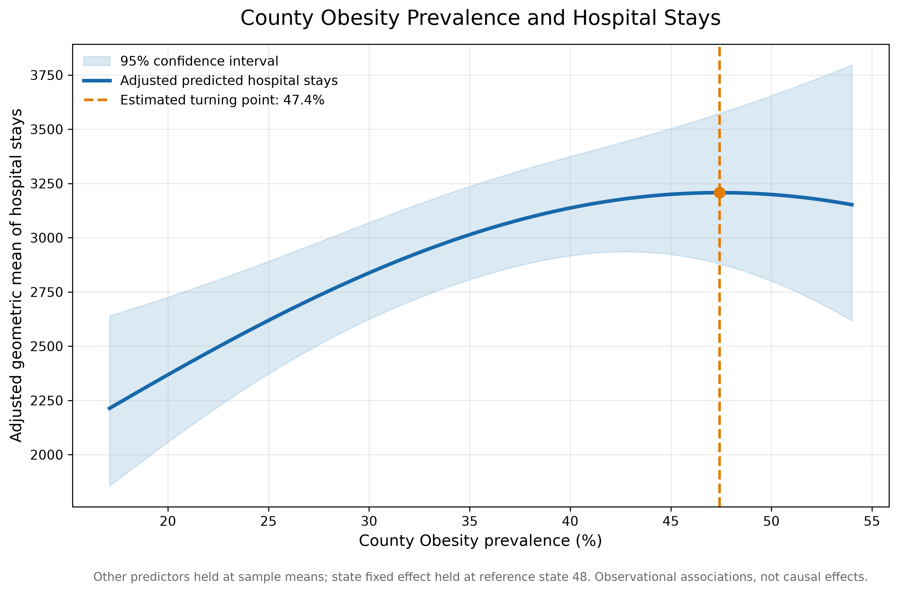

County Diabetes, Obesity, and Hospital Utilization
An adjusted analysis of nonlinear relationships in county-level health data
Overview
Chronic diseases such as diabetes and obesity contribute substantially to the healthcare needs of communities. Understanding how county-level disease prevalence relates to hospital utilization can help identify geographic patterns and inform further investigation into population health and healthcare delivery.
This analysis examines the relationship between county diabetes prevalence, county obesity prevalence, and hospital stays. It uses quadratic regression models to investigate whether these relationships are nonlinear after adjusting for selected socioeconomic and healthcare-access characteristics.
Key takeaway
Both adjusted relationships increase across much of the observed prevalence range and then flatten. The estimated quadratic terms are suggestive but do not meet the conventional 0.05 statistical significance threshold. The estimated turning points should therefore be treated as exploratory, not as established thresholds.
Research questions
- How is county diabetes prevalence associated with adjusted hospital stays?
- How is county obesity prevalence associated with adjusted hospital stays?
- Do these relationships exhibit evidence of nonlinear patterns after accounting for other county characteristics and state-level differences?
Data and study population
The analysis uses a county-level analytic dataset:
analytic_supplement_20260325[1].csv
The analytic sample includes 2,684 counties across 48 state clusters.
The variables used were:
| Measure | Role in analysis |
|---|---|
| Hospital stays | Outcome |
| Diabetes prevalence | Primary predictor |
| Obesity prevalence | Primary predictor |
| Primary care access | Adjustment variable |
| Uninsured prevalence | Adjustment variable |
| Unemployment | Adjustment variable |
| State | Fixed effect and clustering variable |
Counties were retained when state and county codes were positive, hospital stays and primary care access were positive, and the model variables were available.
The original publisher, collection year, and detailed variable definitions should be confirmed against the source documentation before this analysis is used for external policy or clinical conclusions.
Statistical methods
Model specification
Ordinary least squares regression was used with the natural logarithm of hospital stays as the outcome.
The model included:
- Log-transformed primary care access.
- Centered diabetes prevalence and its squared term.
- Centered obesity prevalence and its squared term.
- Centered uninsured prevalence.
- Centered unemployment.
- State fixed effects.
Standard errors were clustered by state to account for potential within-state correlation among county observations.
The model’s R-squared was 0.351.
Adjusted predictions
Adjusted predictions were generated across the observed range of each prevalence measure. Other predictors were held at their sample means, and the state fixed effect was held at the most frequently observed state (reference state code 48).
The shaded regions represent 95% confidence intervals for the adjusted mean predictions. These are not prediction intervals for individual counties.
Turning points
For each quadratic relationship, the estimated turning point was calculated from the linear and quadratic coefficients:
[ x^* = - ]
The resulting estimates describe the location of the fitted curve’s maximum when the quadratic coefficient is negative. They do not, by themselves, demonstrate that a meaningful threshold exists in the underlying population.
Results
Diabetes prevalence

The estimated turning point was 21.53% diabetes prevalence.
The quadratic-term p-value was 0.0671.
The adjusted curve rises across much of the observed diabetes prevalence range before flattening near the estimated turning point. A slight decline appears beyond that point.
However, the quadratic term does not meet the conventional 0.05 statistical significance threshold. The estimated turning point should therefore be interpreted cautiously.
Obesity prevalence

The estimated turning point was 47.43% obesity prevalence.
The quadratic-term p-value was 0.0582.
The adjusted curve rises across much of the observed obesity prevalence range and begins to flatten near the estimated turning point. A slight decline appears at the highest prevalence levels.
The quadratic term approaches, but does not reach, conventional statistical significance. The estimated turning point is exploratory rather than conclusive.
Summary of findings
| Analysis measure | Diabetes | Obesity |
|---|---|---|
| Estimated turning point | 21.53% | 47.43% |
| Quadratic-term p-value | 0.0671 | 0.0582 |
| Meets 0.05 significance threshold? | No | No |
The model included 2,684 county observations, 48 state clusters, and had an R-squared of 0.351.
Taken together, the findings suggest that county-level diabetes and obesity prevalence may have nonlinear relationships with hospital utilization. However, neither quadratic term achieved conventional statistical significance.
Interpretation and implications
The results are consistent with a positive association between chronic disease prevalence and adjusted hospital utilization across much of the observed range. The flattening of the fitted curves raises questions about whether the relationship changes at higher levels of prevalence.
Several explanations could account for these patterns, including differences in healthcare access, disease management, population characteristics, and the distribution of other county-level factors. This analysis does not distinguish among those explanations.
The results should not be interpreted as evidence that increasing diabetes or obesity prevalence reduces hospital utilization beyond the estimated turning points.
Limitations
- Observational design: The analysis identifies associations and cannot establish causal effects.
- Ecological analysis: County-level relationships cannot be assumed to represent individual-level relationships.
- Residual confounding: Adjustment for the included variables and state fixed effects does not eliminate all potential confounding.
- Uncertain turning points: Neither quadratic term achieved the conventional 0.05 significance threshold.
- Uncertainty at the extremes: Confidence intervals widen substantially at higher prevalence levels, indicating less precise estimates.
- Data provenance: The original dataset publisher, collection year, and full measure definitions require confirmation from the source documentation.
- Model specification: Results may be sensitive to the functional form, included covariates, and treatment of geographic clustering.
Conclusion
County-level diabetes and obesity prevalence show suggestive nonlinear relationships with adjusted hospital utilization. Both fitted curves increase across much of the observed prevalence range before flattening. Estimated turning points were 21.53% for diabetes and 47.43% for obesity, but neither quadratic term was statistically significant at the 0.05 level.
These findings are best viewed as exploratory evidence that warrants additional investigation. Longitudinal data, alternative model specifications, and more detailed measures of healthcare access could help determine whether these patterns are robust.
Reproducibility
The analysis was conducted in Python using:
- pandas for data preparation.
- NumPy for numerical calculations.
- statsmodels for regression modeling and clustered standard errors.
- Patsy for model design matrices.
- Matplotlib for visualization.
The analysis script is maintained in the project repository as plot_adjusted_relationships.py.
The figures shown above were generated from the fitted model and saved as PNG files in the project’s research figures directory.
This analysis is intended for research and educational purposes. Findings are observational and should not be interpreted as causal effects or clinical guidance.